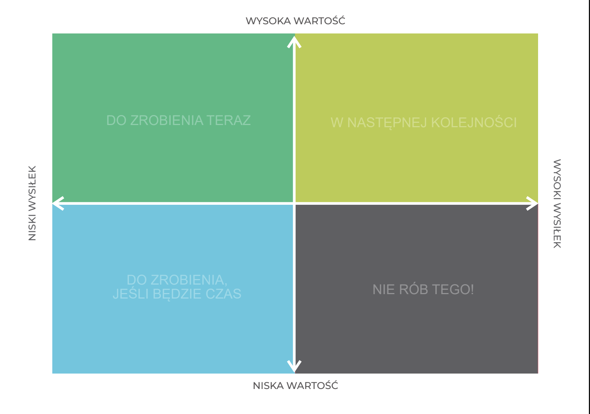

Macierz wartość / wysiłek – jak zdecydować, czym naprawdę warto się zająć?
Po burzy mózgów na tablicy może znaleźć się 30 pomysłów.
Problem w tym, że 30 pomysłów to jeszcze nie plan działania.
Które wdrożyć najpierw? Które zostawić na później? A z których świadomie zrezygnować?
Do tego służy macierz wartość / wysiłek.
Jak przygotować ćwiczenie?
Narysuj macierz z dwiema osiami.
Oś pionowa określa wartość, jaką może przynieść realizacja pomysłu.
Oś pozioma określa wysiłek potrzebny do jego wdrożenia – może obejmować czas, koszty, potrzebę zdobycia nowych kompetencji czy trudność samego rozwiązania.
W ten sposób powstają cztery pola.

DO ZROBIENIA TERAZ
To nasze szybkie zwycięstwa. Pomysły dające dużą wartość, których realizacja nie wymaga dużych zasobów.
W NASTĘPNEJ KOLEJNOŚCI
Są wartościowe, ale wymagają przygotowania, czasu albo zasobów. Nie odrzucamy ich – planujemy.
DO ZROBIENIA, JEŚLI BĘDZIE CZAS
Możemy się nimi zająć, ale nie powinny wypierać rzeczy ważniejszych.
NIE RÓB TEGO
I to pole bywa najważniejsze.
Bo efektywność nie polega wyłącznie na decydowaniu, co będziemy robić. Polega również na świadomym decydowaniu, czego robić nie będziemy.
Taki podział na cztery kategorie znajduje się również w macierzy przygotowanej w materiale 4change.
Jak pracować z macierzą?
Zapiszcie każdy pomysł na osobnej karteczce.
Następnie wspólnie zdecydujcie, gdzie powinien znaleźć się na macierzy.
Nie spieszcie się przy różnicach zdań. To właśnie dyskusja o tym, dlaczego jedna osoba widzi wysoką wartość, a druga niską, jest często najcenniejszą częścią ćwiczenia.
Na zakończenie wybierzcie działania z pola „Do zrobienia teraz” i ustalcie odpowiedzialność oraz termin.
Jaki efekt daje ćwiczenie?
Macierz pomaga przejść od „mamy mnóstwo pomysłów” do „wiemy, czym zajmiemy się najpierw”.
Pozwala ustalić priorytety, porównać perspektywy członków zespołu i – co równie ważne – świadomie zrezygnować z działań, które pochłaniają dużo energii, a przynoszą niewielką wartość.
{{ f.value }}
Pomożemy Waszemu zespołowi ustalić, czym zająć się najpierw — i z czego zrezygnować.